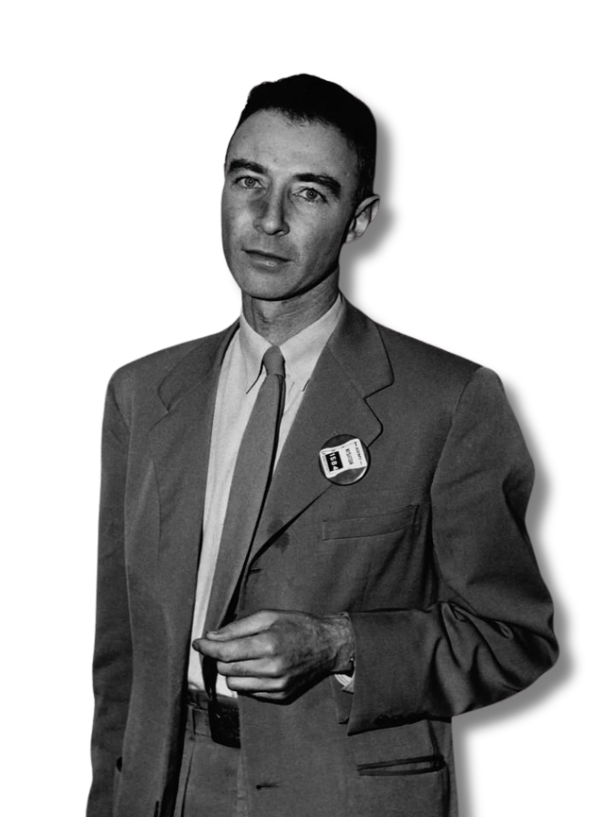
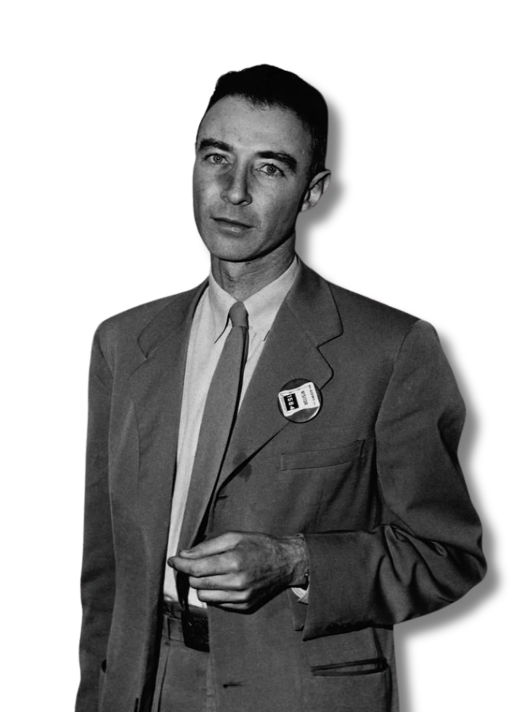

Julius
Robert
 

Julius
Robert
OPPENHEIMER
ABOUT
J. Robert Oppenheimer was an American physicist best known for leading the Manhattan Project, which developed the first atomic bomb during World War II. Often called the "father of the atomic bomb," he played a key role in ending the war but later expressed deep regret over the weapon's destructive power.
After the war, Oppenheimer spoke out against nuclear arms and advocated for global control of atomic energy. His opposition to the arms race led to a political backlash, and in 1954, he lost his security clearance in a controversial hearing during the Red Scare.
Beyond science, Oppenheimer was a thinker who loved literature and philosophy, making his legacy both scientifically brilliant and morally complex.
Born in 1904 in New York City, Oppenheimer grew up in a cultured and affluent Jewish family. He excelled academically and entered Harvard at 18.

He studied quantum physics at Cambridge and Göttingen, working with Max Born and meeting future luminaries like Werner Heisenberg.

In 1942, he became scientific director of the Manhattan Project at Los Alamos, overseeing the development of the atomic bomb.
On July 16, 1945, the first nuclear explosion was successfully tested in New Mexico—an event that marked the dawn of the atomic age.
Haunted by the bomb’s power, he opposed the hydrogen bomb and advocated for arms control, challenging U.S. military policy.

In 1954, during the Red Scare, Oppenheimer’s clearance was revoked in a public hearing that questioned his loyalty and politics.

In his later years, he taught and reflected on science and ethics. In 1963, he received the Enrico Fermi Award. He died in 1967.
The first detonation of a nuclear device conducted in New Mexico, July 16, 1945.
Primary facility for atomic bomb development under his direction.
Oppenheimer left a complicated legacy as both pioneer and critic of nuclear arms.